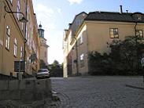
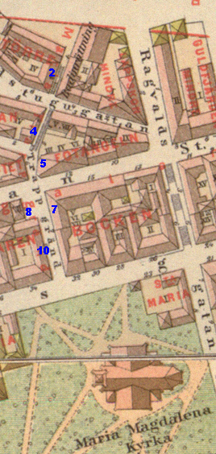
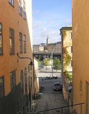

Södermalm i tid och rum
Maria Trappgränd Ur Stockholms gatunamn
År 1885 fastställdes Maria Trappgränd såsom namn på »trappgränden från Hornsgatan till Söder Mälarstrand».
Gränden går till större delen i trappor. I Holms tomtbok 1679 omtalas den såsom »Trappgränden» och »Trappe Stijgen»; dess norra del betecknas såsom »Watugrändh for dhem som boo upp i berget». Under 1700-talet och under 1800-talet fram till 1885 kallas gatan Trappgränden.
Under 1700-talet förekommer också det flera gånger belagda namnet »Kyrkosteget» (1764). I gaturegistret till Stockholms beständige Vägvisare 1820 skiljer man dock mellan »Marie Trappgr[änd]» och »Catharina Trappgränd» .
 Maria Trappgränd 7, hörnet vid Brännkyrkagatan österut. Maria Trappgränd 7, hörnet vid Brännkyrkagatan österut.
|
  Maria Trappgränd söderut från Brännkyrkagatan. Nr 7 till vänster, 8 och 10 till höger. Maria Trappgränd söderut från Brännkyrkagatan. Nr 7 till vänster, 8 och 10 till höger.
|
|
Maria Trappgränd 10 vid hörnet av Hornsgatan 34. Bilden tagen norrut från Mariakyrkan 1907
|



 Norrut. Maria Trappgränd 5 till höger,
Norrut. Maria Trappgränd 5 till höger,
nr 6 till vänster. Det gröna huset rakt fram
är nr 4.
 Maria Trappgränd 5 . Brännkyrkagatan 12
Maria Trappgränd 5 . Brännkyrkagatan 12
till höger.

 Maria Trappgränd 2. Mynnar i
Maria Trappgränd 2. Mynnar iSödermälarstrand invid Slussen.